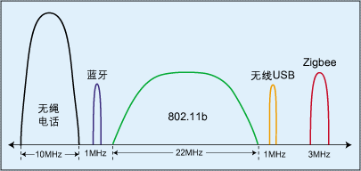
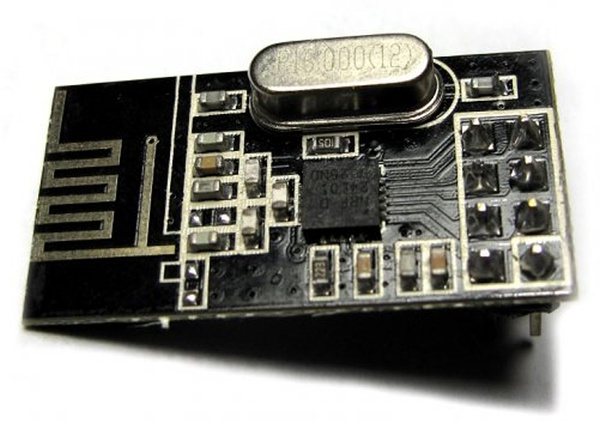
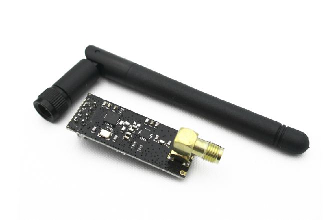
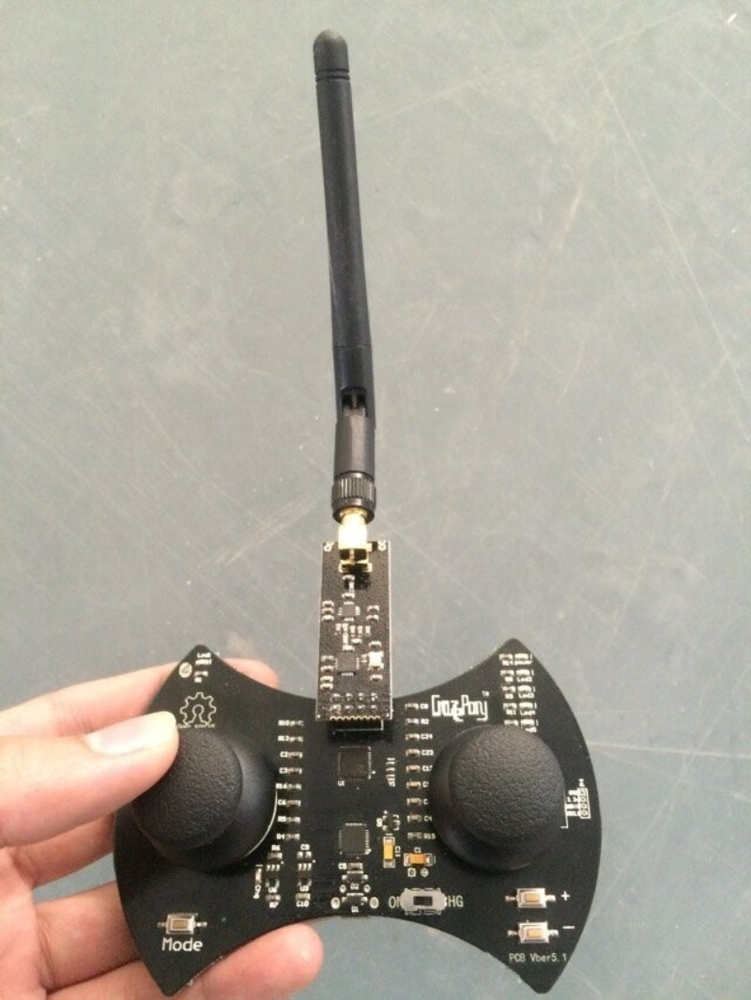
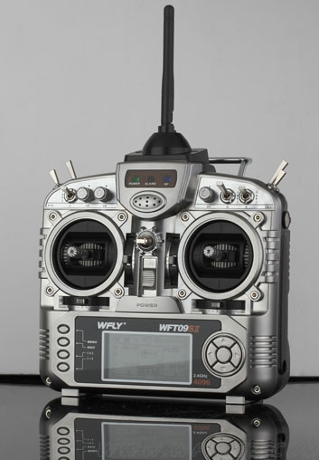
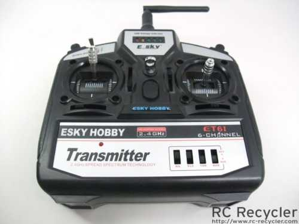
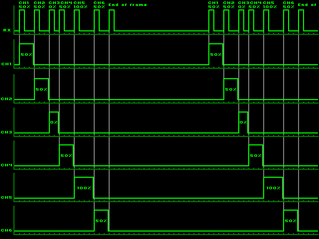

作者：nieyong
常見的無線遙控按照使用技術不同，主要有紅外遙控和2.4G遙控。紅外遙控有方向範圍窄，距離短等特點，所以航模遙控器基本上都是使用2.4G無線遙控。 我們知道藍牙，wifi，ZigBee等都是採用的2.4G頻段，那麼這個又有什麼差別呢？首先我們需要對2.4GHz無線技術以及標準做一個簡單的介紹。
2.4GHz無線技術如今已經成為了無線產品的主流傳輸技術。所謂的2.4GHz所指的是一個工作頻段2400M-2483M範圍，這個頻段是全世界免申請使用。常見的Wifi，藍牙，ZigBee都是使用的2.4G頻率段。
Wifi，藍牙，Zigbee都是基於2.4GHz的，只不過他們採用的協議不同，導致其傳輸速率不同，所以運用的範圍就不同。同樣是採用2.4G頻率作為載波，但不同的通訊協議衍生出的通訊方式會有著天壤之別；僅僅在傳輸數據量上，就有著從1M每秒到100M每秒的差別。詳見下面的2.4GHz ISM頻段無線信號比較圖。

2.4G無線通信模塊（英文：2.4Ghz RF transceiver / receiver module）工作在全球免申請ISM頻道2400M-2483M範圍內，實現開機自動掃頻功能，共有50個工作信道，可以同時供50個用戶在同一場合同時工作，無需使用者人工協調、配置信道。同時，可以根據成本考慮，選擇50米內、150米、600 米多種類型無線模塊。接收單元和遙控器單元具有1鍵自動對碼功能，數字地址編碼，容量大，避免地址重複。
Crazepony就是使用的2.4G無線通信模塊作為無線控制。
Crazepony的2.4G模塊使用的是單片2.4G無線射頻收發芯片NRF24L01。關於為什麼會選用這片IC，在CamelGo的博客我和Crazepony的那點事兒(2)中有這麼一段描述。
數據通信這塊，也沒什麼特別要考慮的，短距離高速通信且免費這一點要求就限制了只能選擇2.4GHz這個頻段，在這個頻段出了很多優秀的芯片廠商。在學生時代，我用得最多是Nordic公司的NRF24L01這個系列的收發一體芯片，由於剛開始著手啟動Crazepony這個項目時，我只會這顆操作芯片，本著方便的原則，所以很自然的選擇了這顆它（後來發現國外一個團隊bitcraze也用的這個系列的芯片時，還是有點小激動的）
市面上有很多NRF24L01的模塊，有標準的接口，直接插上就可以使用。在遙控器上，我們就直接使用了這個模塊，用來和飛控上的NRF24L01進行通信。我們標配的模塊如下圖所示，控制的距離在20m左右。

也可以使用帶有鞭狀天線的NRF24L01模塊，引腳是完全一樣的，能夠達到更遠的控制距離。淘寶購買鏈接。


進口遙控，有名的品牌有JR,FUTABA,SANWA等。
國產遙控器，最常見的為天地飛，英文WFLY。

國產遙控與進口遙控的差距區別在於，一是無線電技術上的差距，另一方面國產的研發機構太少，沒有經過長時間的產品測試。國產遙控器用的都是比較便宜的電子元件，所以成本比較低，特別是接收機，接收機的芯片，好接收機都是進口芯片，所以很穩定，程序編寫比較好，便宜的接收機芯片比較便宜，所以容易出事。一個很簡單的例子，遙控器上面的電位器，國產設備用得是國產電位器一般壽命在10~30萬次，進口設備的電位器，像FUTABA是臺灣產的可以達到100萬次，這樣直接影響遙控器的壽命。一般認為遙控器的做工方面JR遙控器最好，線路佈局各方面都很好，特別是目前只有JR遙控器配有保險絲如果愛好者不小心短路了，只需要更換保險絲就可以，比較人性化，更重要的是JR遙控器全部是在日本，馬來西亞製造，品質有所保證。 FUTABA大眾型遙控器現在比較普遍，現在FUTABA的低端遙控器都是在國內產的，接收機是臺灣產的，所以遙控器這東西一份價格一分貨。模友按照自己的經濟能力去選購就可以了，千萬不能攀比，選擇適合自己的都可以。
現在國產遙控器的廠家越來越多，價格的優惠使得航模的門檻越來越低，所以有一款適合自己的遙控器是廣大模友的心願，廣大模友按照自己的經濟實力合理 選購屬於自己的遙控器。
要使用原有的遙控器控制Crazepony四軸飛行器，要自制接收機。很多廠商原則上是不會公開遙控器使用的2.4G芯片也數據編碼格式的。這就需要對該廠商遙控器的編碼進行破解。
例如crazyflie就支持ESky的遙控器，因為該遙控器的編碼被大神破解並且公開。所以有人專門爭對這個提供了接收機代碼包，叫做Esky Protocol，其實就是ESky公司遙控器使用的通信協議。只要在飛控端支持這種通信方式，那麼可以使用ESky航模公司的遙控器進行控制。Crazyflie官網支持ESKY ET6I Remote Control遙控器。

關於ESky公司的2.4G遙控器設備的通信協議，參考ArduinoRCLib項目中的描述。
The Esky 2.4 GHz equipment uses the Nordic NRF2401AG in both the transmitter and receiver. A compatible alternative to this chip is the NRF24L01+ (which is widely available).

很多新手反應，航模不好控制。其實這是有原因的，其中最大的一點就是關於遙控曲線的問題，而其中又以油門曲線最為有代表性。
目的是把直線變化的油門，變為曲線變化，以此提供不同的飛行模式。我們以最簡單的3點曲線來說明，我們把發射機油門遙杆從下底端，中段，上頂端分為3個點，普通的發射機對應的油門量分別是0%，50%，100%，如果具有油門曲線的發射機，則可對這3個點單獨進行設定。
比如，我們將下底端的0%設定為100%。這時，油門搖桿的位置在中段時油門量為50%，向上向下推動油門遙杆都是不斷的增加油門量直到100%油門。這時我們看到的是一個V字形變化的油門曲線了(這是3D模式的油門變化要求)。5點曲線就是在3點之間插入2個點，以提供更接近曲線的平滑設定。當然還有一些高端的遙控器提供了7點甚至更多的設定點。那麼多少合適呢，對於世界級的比賽其實5點或以上就已經足夠了！